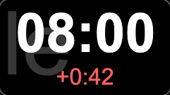
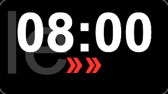
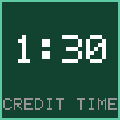
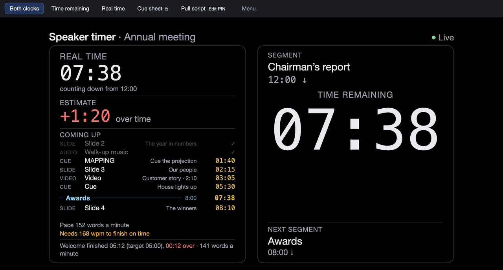
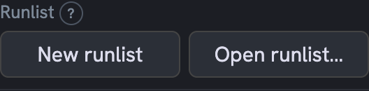
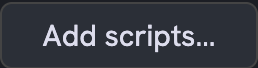
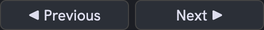

The crew, the clock and everyone else in the room: cue sheet, estimate, crew pages, remote, NDI, runlists, deck and the safety net.
These are the scripts you read on the prompter inside Cadence Prompt, shown as a page. In the app you press Play, read, and try each Your turn as you go. Practice is optional.
A prompter as good for the crew behind the scenes as it is for the presenter on stage.
You can run a show and you can prepare one. This series is about everyone else in the room.
Crew will ask you how long is left, and what is next. Why hire an operator who cannot tell them?
Where it says YOUR TURN, try it.
The cue sheet
Every cue you put in the script becomes a row on the cue sheet.
The columns are Time, Type, What, Length, Needs, Notes and a Ready box that turns the row red when someone unticks it. It covers every script of the open runlist.
You wrote the cues once. The sheet is built from them, so it is never out of date.
A producer who gets the rundown with no extra typing remembers you.
Open the cue sheet from the View menu. Save Cue Sheet… saves it as a PDF, and Copy Cue Sheet pastes it into an email.
Include Last Run adds the times that the last run took.
Your turn Open the cue sheet. Add a cue to this script, then open the sheet again.
Coming up
In the editor, Coming up lists the next cues while you read. A small filter picks which kinds show.
You never lose your place in the show, and neither does anyone looking over your shoulder.
A Slide cue suggests the next slide number. Number Slides… keeps them in order, after an edit.
Slides move around the night before. This keeps the numbers honest.
Your turn Find Coming up in the editor and change which kinds it shows.
Press for the next module.
Module 2
Over, under and the pace
About 5 minutes
The question
How much longer do they have? How long did that segment take?
The presenter asks it silently, with their eyes on the clock. The crew asks you.
Cadence answers both before anyone asks.
The estimate
The estimate says over or under. It is figured from the pace so far and the words left to the Finish cue.
Over is red.

Under is green.
A presenter who sees "under" relaxes. A presenter who sees "over" speeds up before you have to say a word.
No numbers
Some presenters do not want numbers. Set Estimate shows to Pace hint.
Red chevrons show how far over the finish is heading. One at more than fifteen seconds. Two at more than thirty. Three at more than a minute.

They agree with the number, and stay up until the clock reaches the target.
A quiet nudge is easier to take than a number.
Your turn Open the Timer drawer, set Estimate shows to Pace hint, then back.
A clip they skipped
A rehearsal skipped a video. The estimate would think the presenter is faster than they are.
Credit time remaining adds the running time of the clip.

⌘⌥J (Ctrl+Alt+J) does the same.
After the show
Every finished segment is saved with the script. Run history… in the Timer drawer lists them, rehearsal or show, with notes.
It saves them as a CSV, or as a PDF that looks like the window.
A rehearsal that runs long is a gift: you find out on a Tuesday.
Your turn Open the Timer drawer and press Run history….
Press for the next module.
Module 3
The crew's page
About 5-6 minutes
Everyone sees the same thing
Everyone sees the same script, the same clock and the same cues. That is the idea.
Open the Collaboration drawer.
Turn on Local network.
It is off every time you start the app. Nothing is shared until you say so.
Anyone on your network opens a page: the clock, what is coming up, and the cue sheet.

Your turn Turn on Local network, open the address on your phone, then turn it off.
PINs
The View PIN is needed to look.
The Edit PIN lets people tick a row and write a note on the cue sheet.
Without an Edit PIN, nobody can change anything.
The page cannot control anything, so a curious thumb can do no harm.
The script page
Switch on sharing the script text and the crew can read the script on their phones. In the script's own colors, with a zoom they set.
It follows the prompter while the show runs. Scroll away and it stops following, and one button brings it back.
Someone with the Edit PIN can leave a suggestion at a line. The operator reviews it, and accepts or dismisses it later.
This one is new. Tell me what you find on a real phone. Writers get frustrated they do not see the final words. Now they can.
Your turn Find the sharing switch for the script text in the Collaboration drawer, and leave it off.
Pull a script
Pull script on the crew's page gives them the script as it stands, as a PDF or a Word file.
Cue sheet on the same page opens the sheet.
Nobody has to ask you for the latest. And you do not have to send it.
Press for the next module.
Module 4
Phone remote and Anywhere
About 4-5 minutes
A remote in your pocket
A phone can be a remote for the operator. Play and pause, a speed slider, rewind and fast forward, and bookmark steps.
It has its own switch, Allow phone remote, and its own PIN. It is off every time you start the app. The Remote PIN opens nothing else.
It is one more controller, not one more way to break the show.
Use it to stand beside the presenter, or to run a rehearsal from the back of the room.
Phone remote is new. Tell me how it feels on a real phone.
Your turn Find Allow phone remote in the Collaboration drawer, and leave it off.
Anywhere
The crew pages can go over the internet. A show gets its own address, and phones open the same View, Script, Timer and Menu pages.
The PINs still apply. A page the crew opens from a hotel room is as safe as the one on the local network.
Open the Collaboration drawer and look for the internet switch.
Anywhere is new. Tell me how it goes off the venue Wi-Fi.
Producers who are not in the building can see the script and the clock. That is a new kind of show.
Press for the next module.
Module 5
NDI pictures
About 4-5 minutes
The clock on the switcher
Cadence can put its pictures on the network as NDI sources. A switcher, a streaming program or a multiviewer can take them.
There are two. Cadence Timer, and Cadence Prompter.
NDI needs the free NDI Tools from ndi.video. Without them the switches are gray, and the line under them says so.
Nothing is sent until you switch a source on. Every source is off each time you start the app.
Cadence Timer
The speaker's clock, and the time of day if you want it, on a see-through picture.
It is a Pill, a clock in a rounded box, or a Strip, a bar with the segment, the clock and the estimate.
Styles: Dark, Light, Text only, Solid, or Solid on green for a switcher that keys on color.
True time is the real segment clock, for a multiview. Presenter's time is what the talent sees, for a confidence monitor.
Warning turns the clock a color for the last part of the segment, in NDI only.
The director sees the clock on the program feed. The talent's clock does not change.
Your turn Open the Timer drawer and find the NDI picture group.
Cadence Prompter
What the talent sees: the script and where it is reading. Opaque, for a confidence monitor or a stream.
It is the heavier of the two. 1280 by 720 at 30 a second is light.
Check this machine switches every picture on at its settings, so you know your computer can take it before the show.
Press it, play the script, and read the verdict.
Press for the next module.
Module 6
Runlists and master scripts
About 5-6 minutes
Shows are more than one script
A runlist puts your scripts in order. The prompter reads out of one and into the next as one flow.
Each script keeps its own clock.
Open the Runlist drawer.

New runlist starts one with the open script in it. Add scripts… puts more at the end.

The arrows on a row move it, and the cross removes it.
A script that was moved or deleted stays in the list, marked missing. It is not dropped.
Your turn Open the Runlist drawer. If you came here with Next script, you are in a runlist now.
Moving through it
Next script jumps to the start of the next script. Previous goes back.

Next script is ⌘⌥] (Ctrl+Alt+]).
Carry on into the next script makes the reading cross from one script into the next by itself.
Turn it off, and the prompter stops in black at the end of a script and waits for Play.
Top and End stay inside the open script.
Your turn Press Previous, then Next, and watch the open script change.
Hand it off
Under Hand off, Export package… makes a folder with the runlist and a copy of every script. Import package… on another computer brings them all in and opens the runlist.
That is how you carry a show to the backup computer.
One master script
Sometimes you want all the scripts as one. Tap the numbers beside the scripts in the runlist, and press Make master….
It lists the order, and says what stitching will do. Each script gets a segment cue and a bookmark named after it, and speaker styles are matched by name.
Then it saves one script, or a Word, PDF or text file.
The crew can do the same from the pull page, with the Edit PIN. Master scripts are new and untried. Tell me what you find.
Press for the next module.
Module 7
Cue to cue and Snap to stanza
About 5 minutes
Cue to cue
Cue to cue hops from one cue to the next. The prompter and the editor both land on it.
Which kinds it visits is your choice, and the script keeps it. The window is Cue-to-cue….
It is a rehearsal's best friend. Skip the talking, and check every slide and video.
Slides and videos to start with.
Your turn Open the Cue-to-cue window and look at the kinds it offers.
Hymns and songs
Some shows are made of stanzas. The current stanza has to sit at the very top, and the next one waits below.
Snap to stanza does that. A press of a page key takes the next stanza to the top with an eased glide.
Cadence reads stanzas from the script: a run of lines between blank lines. A line that only names the stanza, like Chorus or Verse 2, belongs to the stanza under it.
Nothing needs marking up. Paste the hymn with its blank lines and it works.
Which lines snap
There is no Snap mode. A line snaps when its own setting says so, or its style does.
In Styles, each style has a Snap button. A Choir style is the usual use.
In the Text drawer, Snap these lines has Snap, No snap and Style default.
With nothing selected it asks about the whole script.
One undo puts it back.
Snap to stanza is in the command search too.
Your turn Open the Text drawer and find Snap these lines.
A stanza taller than the screen
A stanza too tall for the display gets stops of its own. Each page key shows the next part, and then goes on to the next stanza.
Find page breaks… finds the sentence ends and breaks them into lines for you. You see each one before it changes.
TURN marks shown puts a small amber tag at the start of every stanza.
Rehearse a hymn once with TURN marks on, and you will know where every page turn lands.
Press for the next module.
Module 8
Make the deck yours
About 5-6 minutes
Anything you do twice
The deck is yours to change. Open the Controllers drawer and your deck appears on the screen, one page at a time.
Drag an action from the list onto a key or a dial. Drag one key onto another to swap them, or back onto the list to clear it.
Stream Deck rigs… opens the rig editor. Anything you do twice can be a key.
Bold, Italic, Underline, Clear formatting, a Style and Previous script are keys too.
Your turn Open the Controllers drawer and look at your deck on the screen.
Keys with settings
Some keys carry settings. Drag COLOR onto a key and choose what it sets: the text, the background, or both.
Choose both, black on yellow, and the key looks like this:
One press, and the selected words are highlighted.
The first thing I fixed for myself was five clicks to color a cue. It is one key now.
Cue keys work the same way. Drag Cue onto a key, name it SLIDE and make it yellow, and a slide cue lands at your cursor.
Your turn Put a COLOR key on your deck set to both, black on yellow, select this line and press it.
Pages and rigs
Add pages with + page and name them. Each page has its own dials.
Keep several rigs: Studio, Travel, Awards night.
Keys are framed in the color of their type, so a key is easy to find by color.
Other knobs and keypads work too, and the Controllers drawer's Other devices tray lists them.
The best operator is the one with the most reachable hands.
Press for the next module.
Module 9
Print, back up and go live
About 5 minutes
On paper
Some people do not trust a screen.
File, then Print Script… makes the printed script, with your colors, your highlights and your pictures. Save Script as PDF…, Save Script as Word Document… and Save Script as Text… are in the same menu.
Copy Script as Formatted Text pastes into an email with its color.
The cue sheet saves as a PDF, and as a spreadsheet.
Print it for the person who does not trust a screen.
Your turn Save this script as a PDF and open it.
It looks after you
Cadence autosaves as you type, and keeps a Backups folder. Versions… keeps every version you bring in.
A recovery file is kept behind both.
If something does fail, there is a backup behind it.
Every finished segment is saved too, in the run history.
Before you go live
Open the Show drawer and press Checklist…. It walks you through do not disturb, notifications and power.
Keep awake stops the display from sleeping while Cadence is open.
Show-mode quiet keeps Cadence's own pop-ups off the prompter.
Nothing ruins a show like a software update.
Your turn Open the Show drawer and press Checklist….
The three promises
Presenters served. Walk on knowing your words, your pace and your time.
Operators elevated. Prep in minutes, then run the show with your hands on it.
Crews, shows and events made better. One show, one source of truth.
If the prompter does its job, it almost goes unnoticed.
Tell me what is working and what needs fixing. Ready to make it right.
Founder
That is the whole room. Press Top twice to start again, or open a new script and put it to work.

 for the next module.
for the next module.